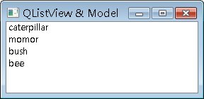
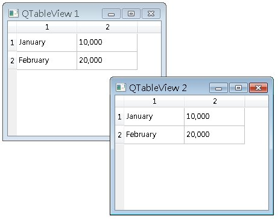
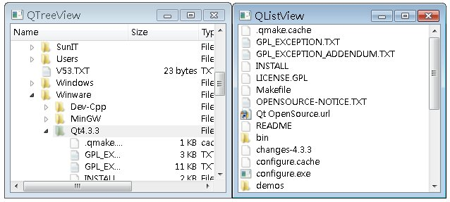

QListWidget、QTreeWidget、QTableWidget，
它們分別是QListView、QTreeView、QTableView的子類別，而這些父類別又都繼承自QAbstractItemView類別，
QAbstractItemView負責Model/View設計中View的角色，而QAbstractItemModel則南Model/View設
計中Model的角色。
Model/View設計中，View負責畫面的呈現，而Model則是與畫面無關的資料模型，一個畫面表現出資料模型的呈現方式，資料模型可以被多個不同性質的畫面呈現，例如表格、清單、長條圖等，如果資料有變動，畫面會同時依照資料模型而變動。
以最簡單的例子來說明View類別的使用：
#include <QApplication>
#include <QStringList>
#include <QAbstractItemModel>
#include <QStringListModel>
#include <QListView>
int main(int argc, char *argv[]) {
QApplication app(argc, argv);
QStringList numbers;
numbers << "caterpillar" << "momor" << "bush" << "bee";
QAbstractItemModel *model = new QStringListModel(numbers);
QListView *view = new QListView;
view->setWindowTitle("QListView & Model");
view->setModel(model);
view->show();
return app.exec();
}
QStringListModel為QAbstractItemModel的子類別，上面的程式當中，使用QStringListModel包裝QStringList資料，以作為View的資料模型，在這邊使用QListView作為畫面，並使用其setModel()方法設定資料模型。
下圖為執行時的參考畫面：

Qt有提供QAbstractItemModel的幾個實作，像是QStringListModel、QSqlQueryModel、
QStandardItemModel等，下面這個程式使用QTableView與QStandItemModel製作表格，資料模型將由兩個表格畫面共
享，當您改變其中一個表格畫面的資料時，資料模型的資料會變動，而另一個表格畫面的資料也會自動更新：
#include <QApplication>
#include <QStandardItemModel>
#include <QStandardItem>
#include <QTableView>
int main(int argc, char *argv[]) {
QApplication app(argc, argv);
QStandardItemModel *model = new QStandardItemModel;
model->setItem(0, 0, new QStandardItem("January"));
model->setItem(1, 0, new QStandardItem("February"));
model->setItem(0, 1, new QStandardItem("10,000"));
model->setItem(1, 1, new QStandardItem("20,000"));
QTableView *view1 = new QTableView;
view1->setModel(model);
QTableView *view2 = new QTableView;
view2->setModel(model);
view1->show();
view2->show();
return app.exec();
}
下圖為執行時的參考畫面：

QDirModel提供本機檔案系統的檔案資訊快取，下面這個程式使用QDirModel、QTreeView與QListview，製作類似檔案總管的功能，您可以在QTreeView中點選項目，如果該項目是資料夾，則在QListView中顯示該資料夾中的檔案與子資料夾：
#include <QApplication>
#include <QDirModel>
#include <QTreeView>
#include <QListview>
int main(int argc, char *argv[]) {
QApplication app(argc, argv);
QDirModel *treeModel = new QDirModel;
QTreeView *tree = new QTreeView;
tree->setModel(treeModel);
QListView *list = new QListView;
list->setModel(treeModel);
list->setRootIndex(treeModel->index("C://"));
QObject::connect(tree, SIGNAL(clicked(const QModelIndex&)),
list, SLOT(setRootIndex(const QModelIndex&)));
tree->setWindowTitle("QTreeView");
tree->show();
list->setWindowTitle("QListView");
list->show();
return app.exec();
}
下圖為執行時的參考畫面：

|
|